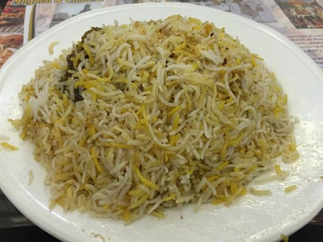

Calcutta Mutton Biryani

Description
Fragrant rice and soft mutton get together in this classic Calcutta biryani dish. Contains potatoes!
Ingredients (Serves 5–6 servings)
- 1 kg mutton (large pieces of ~100g each)
- 5 whole potatoes (the starchy kind, e.g., ‘jyoti’, ~80g each)
- 500 g basmati rice (aged, long-grained, non-parboiled)
For the birista
- 150 g onions (sliced)
- ~150 g vegetable oil (for deep frying)
For the biryani masala
- 1.25 g (6 pcs) green cardamom
- 0.75 g (1 pc) black cardamom
- 1.5 g (¾ tsp) cloves
- 0.5 g (3 cm stick) cinnamon
- 1.2 g (½ pc) nutmeg
- 1.75 g (2 pcs) mace
- 2 g shahi jeera
- 2 g kabab chini
- 1 g (½ tsp) fennel seeds
- 3 g white pepper (whole)
- 1.25 g (½ tsp) black pepper (whole)
For marinating mutton
- 100 g yoghurt
- 10 g ginger
- 10 g garlic
- 20 g birista
- 8 g biryani masala
- 5 g kewra water
- ½ tsp red chilli powder
- 20 g salt
- ½ tsp ground pepper
- 150 g water
For the rice
- 1.25 g (6 pcs) green cardamom
- 1.5 g (2 pcs) black cardamom
- 7 g cloves
- 1 g (6 cm stick) cinnamon
- 7 g fennel seeds
- 3 g bay leaves
- 3 kg water
- 45 g salt
For assembly
- 6 to 10 pcs bay leaves (to line the pan with)
- 40 g alubukhara (dried plums)
- 1 tsp rose petals (optional)
- 15 g birista
- 5 g biryani masala (see above)
- 50 g grated khoya kheer (‘mawa’ or solidified milk)
- 200 g yakhni
- 5 g lime juice (from half a lime)
- 1 pinch saffron (steeped in 20g warm milk)
- 1 pinch yellow food colour
- 180 g milk
- 5 g kewra water
- 5 g rose water
- 4 drops meetha attar
- 30 g ghee
- 20 g butter
Method
STEP I—FRYING POTATOES
- Peel potatoes and smear on them yellow food colour. Keep the potatoes
whole (each piece should be about 80 g) and go easy on the amount of food colour.
- Heat vegetable oil, 3 cm deep, in a pan. Fry the potatoes until they are lightly
coloured on all sides (about 4 minutes).
- Drain them from the oil and set aside.
STEP II—MAKING BIRISTA
- In the same oil, add sliced onions, a small handful at a time, to make birista.
- Weigh two separate portions of birista—20 g and 15 g—and keep ready.
STEP III—MAKING BIRYANI MASALA
- In a pan set over medium heat, add all the spices in the given proportions for
‘biryani masala’ (see above). Gently toast them, stirring continuously.
- Transfer the toasted spices to a spice grinder and blitz them to a fine powder.
- Weigh two separate portions of biryani masala—8 g and 5 g— and keep ready.
STEP IV—MARINATING MUTTON
- Peel ginger and garlic, roughly chop them, and crush them into a fine paste.
- In a large mixing bowl or pressure cooker, mix together yoghurt, ginger and
garlic paste, birista, kewra water, biryani masala, red chilli powder, salt, and
ground pepper, in the proportions given above for ‘marinating mutton’.
- Add the mutton pieces and coat them well with the marinade, making sure to to massage it into the crevices too.
- Cover and set aside for 1 hour.
STEP V—SOAKING RICE
- Meanwhile, wash the rice and soak it in water for 30 minutes. At the end of
this time, drain the water and strain the rice over a net or colander. Set aside.
Soaking leads to longer and fluffier rice grains.
STEP VI—COOKING MUTTON
- After the mutton has had 1 hour to marinate, transfer it to a pressure cooker.
- Lay the fried potatoes at the bottom of the pressure cooker, followed by the
mutton on top (we changed this step from the
video because this yields juicier
potatoes).
- Add 150 g water and pressure cook it on medium-low heat for 30 minutes.
Allow the steam to release naturally for another
15 minutes before opening the
lid of the pressure cooker.
- Separating mutton, potatoes, and yakhni: Extract the potatoes and mutton pieces
in separate dishes and set them aside. Now strain the liquid remaining
in the pressure cooker.
This is called ‘yakhni’ (a broth resulting from mutton
and spices cooked together). We need just 200 g of it, so weigh it out and
keep ready.
STEP VII—BOILING WATER FOR RICE
- Place the spices mentioned in the ‘rice’ section above in the given proportions
on a
small square of cheesecloth. Tie them with a piece of twine to form a
bag.
- In a large pot, take 3 kg water. Add 30 g salt to it.
- Add the bag of spices to the water and allow it to come to a boil (should take
about 20 minutes).
STEP VIII—PREPARING FOR ASSEMBLY
- Meanwhile, prepare for assembly by weighing out all that you will need (see
‘assembly’ section above) and keeping ready.
- This is the order in which you will need everything.
- Bay leaves
- Cooked mutton pieces
- Cooked potatoes
- Alubukhara
- Birista
- Rose petals (if using)
- Biryani masala
- Grated khoya kheer
- Yakhni
- Lime juice
- Saffron and yellow food colour mixed in 20 g warm milk
- Rose water, kewra water, and meetha attar mixed in 180 g warm milk
- Ghee and butter, melted together in the microwave
STEP IX—COOKING RICE, ASSEMBLY, AND DUM
- Set the biryani’r hnari or pan you are using for dum on low heat. Grease it with
ghee.
- Lay bay leaves in a single layer to cover the bottom of the pan. These will
impart an aroma and provide buffer against burning.
- Place the mutton pieces in a single layer, and the potatoes on top of the
mutton. Don’t place potatoes too
close to the edge or you might accidentally cut into them while serving.
- Strew alubukhara, birista, and rose petals evenly.
- Take half the stipulated amount of biryani masala and khoya kheer, and spread
evenly. We will use the remaining half in the next layer.
- Now add the yakhni and lime juice.
- By this time the water for your rice should have come to a boil and its colour
changed. Extract the bag of spices and discard it.
Add the rice and let it cook
until 80% done, that is, until when the centre is no longer hard, but the grain is
still firm.
Our rice took about 5 minutes to reach this stage, but read your
packet instructions.
- Strain rice, a ladle at a time, and spread it directly in the pan. Repeat this until half the rice is added to the pan.
- On top of this first layer of rice, spread the remaining biryani masala and khoya kheer. Also spread the saffron+colour mixture evenly.
- Now strain the rest of the rice and add it to the pan. Flatten it gently.
- On top of the second layer of rice, add milk mixed with the aromatics. Also
add melted butter and ghee, making sure to drizzle it
near the sides of the pan
too.
- Cover the pan with heavy-duty aluminium foil (if yours is thin, use double
layers), sealing the sides well so that no steam escapes. Cover
the pan with a
tight-fitting lid. If you don’t want to use foil, you can also seal the lid with a wet
flour dough.
- Set the pan on dum on medium-low heat for 30 minutes. Turn of the heat and
allow it to rest another 15 minutes before serving.